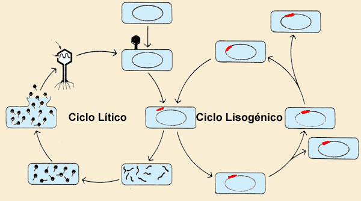
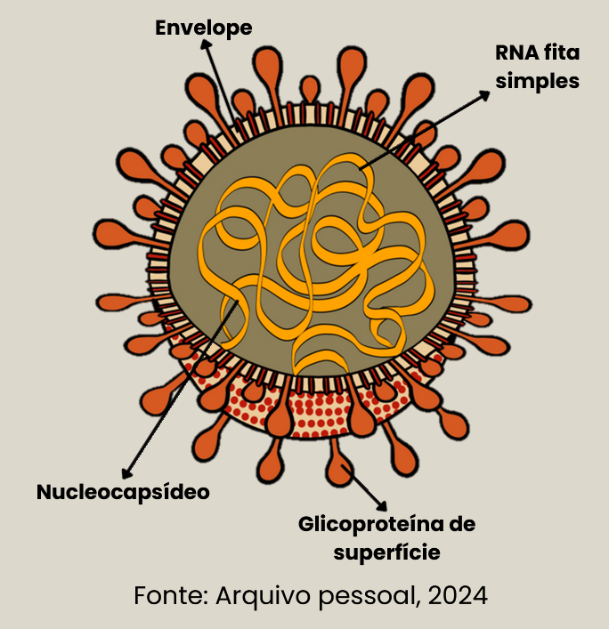

Caio Fachini Lopes de Almeida
Augusto Ramos Saar
Dr. Eduardo Butturini de Carvalho
Dr. Mário Tatsuo Makita
Dra. Renata Ferreira Fernandes de Moraes
Livro de jogos - Virologia Veterinária
Você já parou para pensar que algo invisível a olho nu pode mudar completamente a saúde de um animal, de um rebanho inteiro — e até da população humana?
Esse é o fascinante e desafiador mundo da virologia veterinária.
A palavra virologia vem do latim virus, que significa “veneno”, e do sufixo logia, que quer dizer “estudo”. Ou seja, virologia é o estudo dos vírus, agentes microscópicos capazes de infectar praticamente todos os seres vivos. Mesmo sendo tão pequenos e simples, os vírus têm um enorme impacto na medicina veterinária, afetando tanto animais de companhia quanto animais de produção e silvestres.
Na prática veterinária, compreender os vírus é essencial. Eles são responsáveis por algumas das principais doenças infecciosas dos animais — muitas delas sem cura específica, o que torna a prevenção e o diagnóstico precoce fundamentais. Além disso, diversas viroses têm potencial zoonótico, ou seja, podem ser transmitidas aos humanos, reforçando o papel do médico-veterinário como agente de saúde única (One Health).
Mas aprender virologia não precisa ser algo complicado ou distante da realidade!
Neste e-book, você vai explorar o universo dos vírus de forma interativa e divertida, por meio de jogos, desafios e conteúdos dinâmicos que facilitam o aprendizado. Aqui, a virologia ganha vida — você vai entender desde a estrutura viral até o impacto das doenças no campo e nas clínicas, de um jeito leve e prático. Afinal, conhecer os vírus é o primeiro passo para combatê-los.
E, com conhecimento, curiosidade e tecnologia, é possível transformar o estudo da virologia veterinária em uma jornada envolvente, que une ciência, inovação e aprendizado ativo.
No processo de reprodução viral, os vírus apresentam dois ciclos, o lítico e o lisogênico, visto que alguns vírus só apresentam um ciclo ou ambos.

1.Adsorção: O vírus se liga à superfície da célula hospedeira;
2.Penetração: O material genético do vírus é injetado na célula hospedeira;
3.Replicação e Síntese: O DNA ou RNA viral assume o controle da maquinaria celular, direcionando a célula a produzir componentes virais;
4.Montagem: Os novos vírus são montados a partir dos componentes recém-sintetizados;
5.Liberação: A célula hospedeira é destruída, liberando novos vírus que podem infectar outras células.
Adsorção e Penetração: Semelhante ao ciclo lítico, o vírus se liga à célula e injeta seu material genético.
Integração: O DNA viral se integra ao DNA da célula hospedeira, formando um profago.
Replicação: Cada vez que a célula hospedeira se divide, ela replica o DNA viral junto com seu próprio DNA.
Indução: Em resposta a certos estímulos, o DNA viral pode ser ativado, saindo do genoma da célula hospedeira e iniciando o ciclo lítico, onde novos vírus são produzidos e liberados.
Viroses de maior importância para medicina veterinária:
• Coronavírus Canino Entérico (CCoV);
• Peritonite Infecciosa Equina (PIF).
O coronavírus canino mais comum é o Coronavírus Canino Entérico (CCoV), que afeta o trato gastrointestinal dos cães, causando sintomas como diarreia, vômitos e, ocasionalmente, desidratação.
Ciclo: Lítico;
Localização: Cosmopolita;
Vacinação: presente;
Notificação: ausente.
O CCoV é altamente contagioso entre os cães e é transmitido principalmente por meio do contato direto com fezes contaminadas.

É importante observar que o coronavírus canino não é o mesmo que o coronavírus humano SARS-CoV-2, que causa a COVID-19.
Os cães podem contrair outros tipos de coronavírus, mas não há evidências de que os cães desempenhem um papel significativo na propagação do vírus que causa a COVID-19 em humanos.